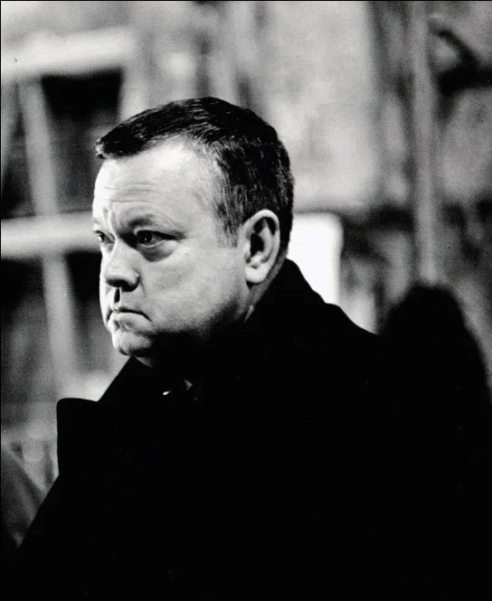
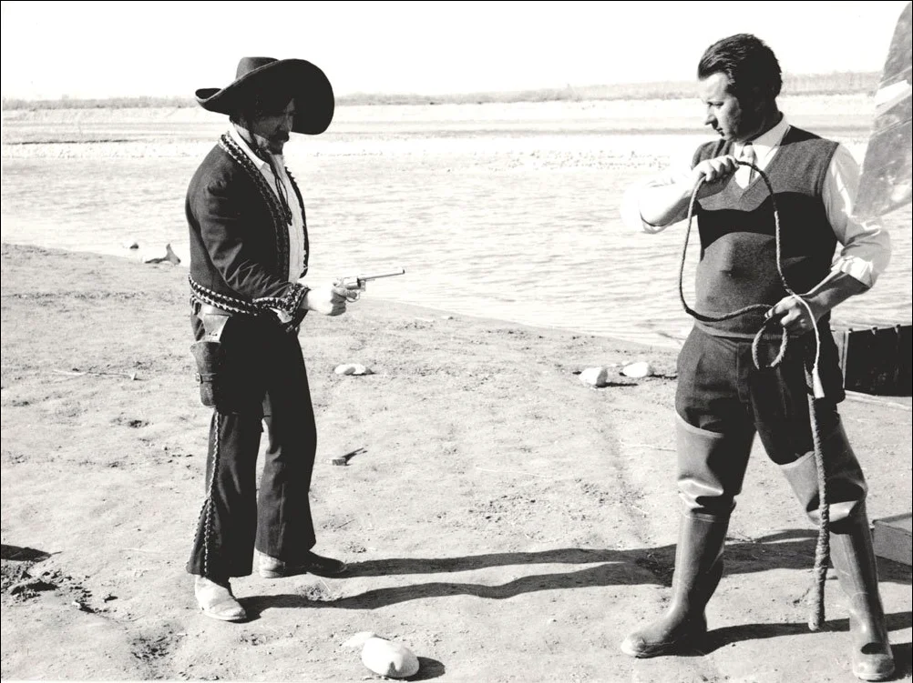
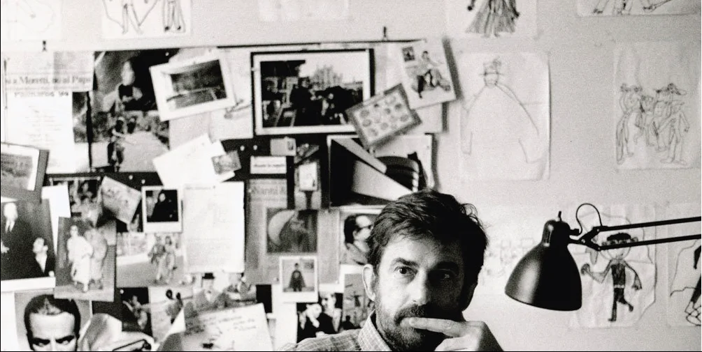
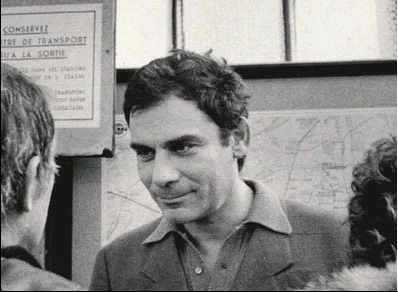

UniversoCortoUniversoCorto
Brief: durante il tirocinio 2024 da Nomina a Pisa (percorso E-Campus), contribuire all’identità di UniversoCorto, festival internazionale del cortometraggio: serviva una copertina per la presentazione che apre il festival ogni anno, più declinazioni social B2B e un Festival Profile per la raccolta fondi. Soluzione: sono partito dalle fotografie di Dondero e ho costruito un collage digitale — strappi, livelli e ricomposizioni in un’unica immagine d’apertura — lavorando in autonomia con revisioni del creative director. Ho curato anche le declinazioni per post e profilo. Risultato: la mia proposta di copertina non è stata scelta — resta la mia preferita e la mostro onestamente come concept — mentre il lavoro su social e profilo ha supportato la comunicazione del festival. Referenza del tutor Francesco Pierotti (Nomina, 29.11.2024): consegne rispettate e buona integrazione nel modus operandi dello studio.Brief: during my 2024 internship at Nomina in Pisa (E-Campus path), contribute to the identity of UniversoCorto, an international short-film festival: a cover for the yearly opening presentation was needed, plus B2B social versions and a fundraising Festival Profile. Solution: I started from Dondero’s photographs and built a digital collage — tears, layers and reassembly into one opening image — working independently with creative-director reviews. I also handled social and profile versions. Outcome: my cover was not selected — it remains my favourite and I show it honestly as a concept — while the social and profile work supported festival communication. Tutor reference Francesco Pierotti (Nomina, 29.11.2024): deadlines met and smooth fit with studio workflow.